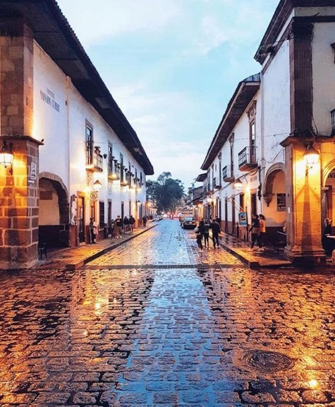

HISTORIA DE PATZCUARO
Este pueblo mágico puede presumir más de 500 años de historia. Fundado por Don Vasco de Quiroga para ser el centro político y religioso de la región. Él erigió la Basílica de Nuestra Señora de la Salud y fundó la primera universidad de México, el Colegio de San Nicolás, hoy Museo de Artes e Industrias Populares.

- Antiguo Colegio de San Nicolás
- Casa de los Once Patios
- Plaza Vasco de Quiroga
- Templo del Sagrario
- Basílica de la Virgen de la Salud
- Templo y Hospital de San Juan de Dios
- La Plaza de San Francisco
- Palacio de Huitziméngari
- Biblioteca Pública Gertrudis Bocanegra
- Teatro Emperador Caltzontzin
Atractivos:
CARACTERISTICAS
| FESTIVIDADES | FUNDADO | CREADOR | MEJOR EPOCA | GASTRONOMIA |
|---|---|---|---|---|
| Aniversario de Don Vasco de Quiroga, 14 de marzo. Semana cultural. | Fue fundado en el año 1300 | Fundado por los purepechas | Noviembre | Charales secos |
| Aniversario de la Ciudad, 28 dec septiembre. | Corundas rellenas | |||
| "Kuirsi-atakua", 31 de octubre. cacería ceremonial de patos (Janitzio) | mezcales | |||
| Día de Muertos, 1 al 2 de noviembre. | ||||
| Día de la Virgen de la Salud, 7 al 8 de diciembre. |